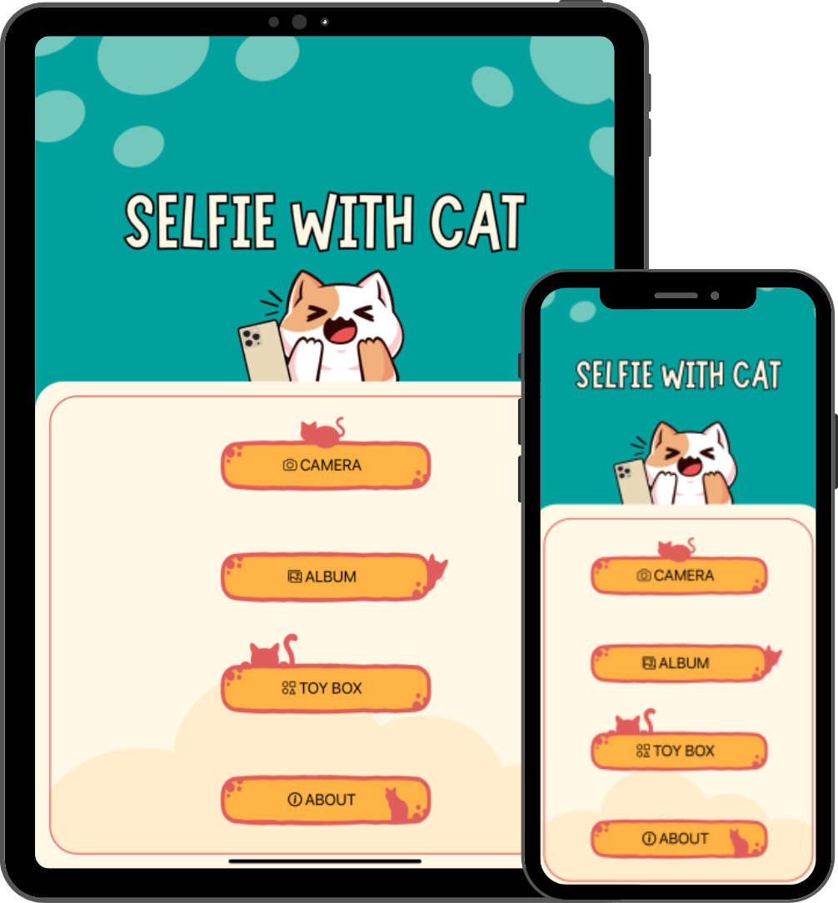

Snap Purr-fect Selfies with Your Cat! 🐱📸
Turn playtime into priceless memories! Selfie Cat captures adorable selfies of your furry friend as they interact with fun, on-screen toys. Ready to make your cat a superstar?

Turn playtime into priceless memories! Selfie Cat captures adorable selfies of your furry friend as they interact with fun, on-screen toys. Ready to make your cat a superstar?
Laser pointers, bouncing balls, colorful fireworks, and swimming fish! Selfie Cat keeps your feline entertained with exciting digital toys designed to grab their attention.
Your cat taps, we snap! Selfie Cat automatically takes a photo every time your cat touches the screen—no extra effort needed!
Show off your kitty's best moments! Easily save and share your cat's hilarious and heartwarming selfies with friends on social media.
Choose from four fun-filled toys: Laser Pointer, Balls, Fireworks, or Fishes.
Place your device in front of your cat and watch them interact with the screen.
Every tap triggers a selfie—capture their cutest reactions effortlessly!
Spread the joy by posting your cat's best snapshots online!
Take perfect selfies every time